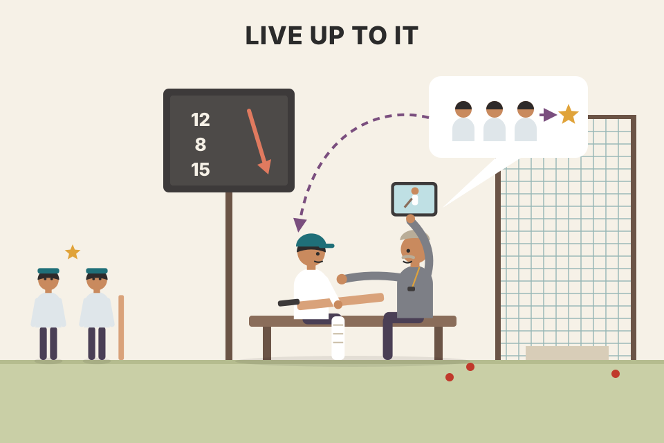
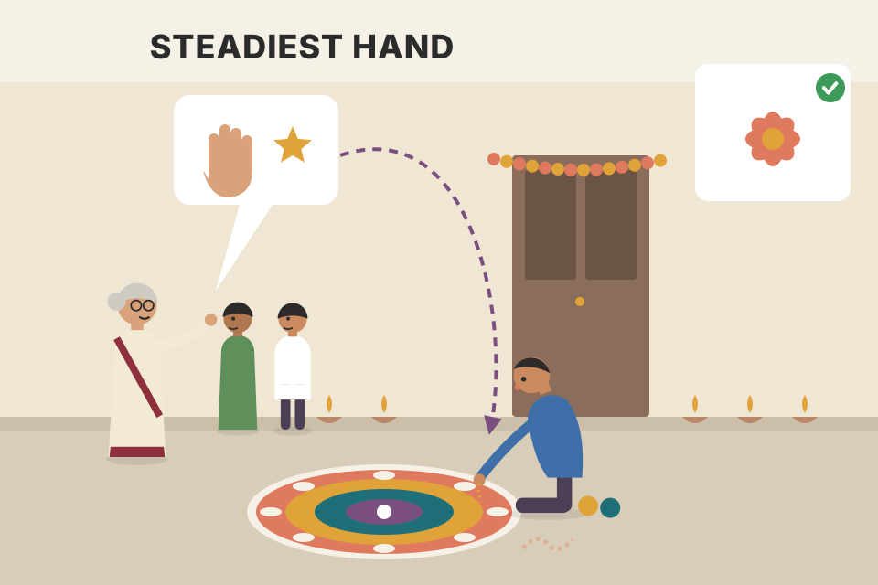
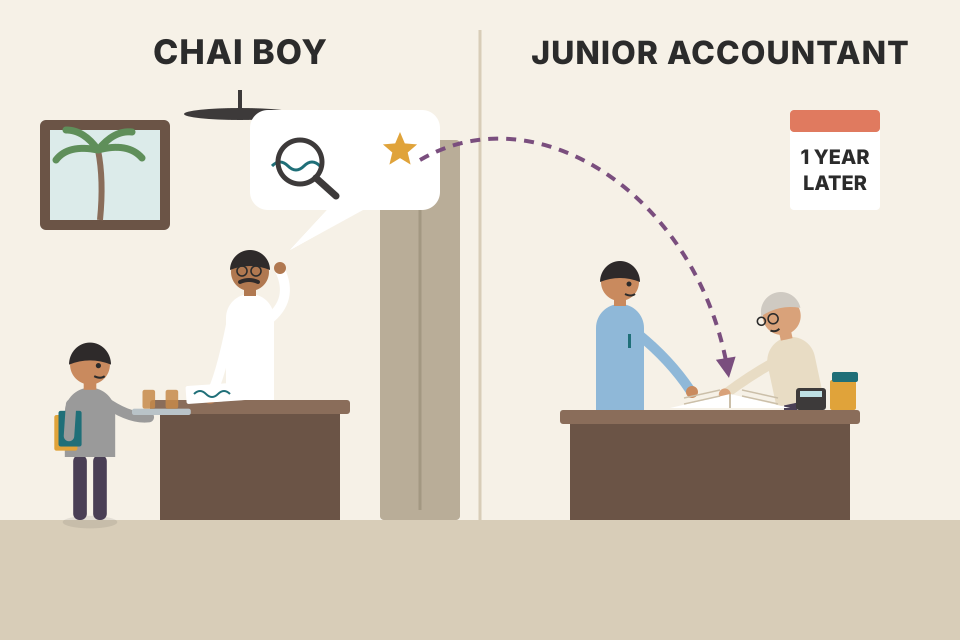
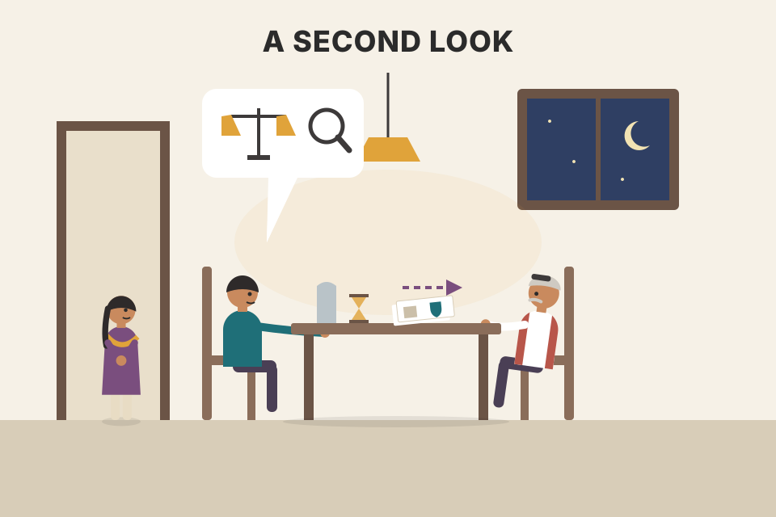
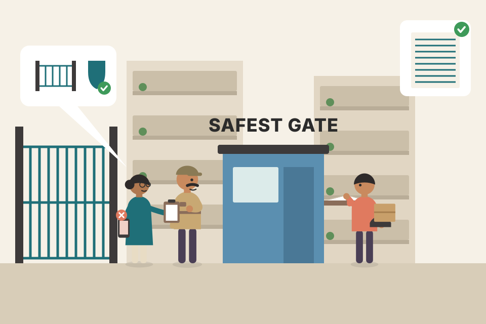
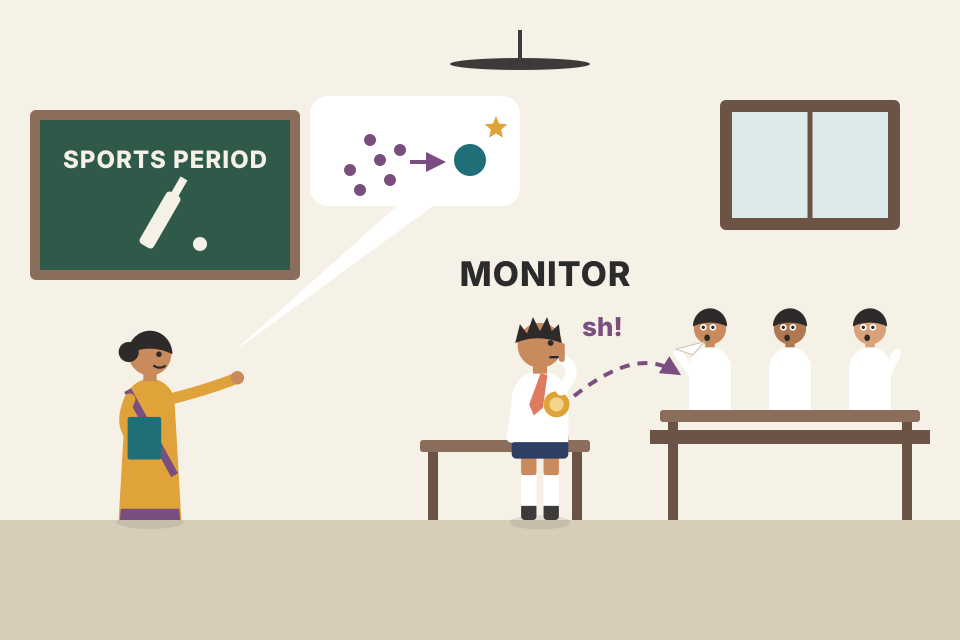

DALE CARNEGIE · HOW TO WIN FRIENDS · PART FOUR · CHAPTER 7 · PDF p226–229
Give a Dog a Good Name
If you want someone to get better at something, talk to them as if they already are good at it. Then they work hard so they don't let that picture of them down.
This is one of the shortest chapters in the book: four pages and five short stories. It starts with a question every lead runs into: what do you do when someone who used to do good work starts doing poor work? Firing them fixes nothing and scolding breeds resentment. Carnegie's answer is to remind the person of the reputation they have earned, or credit them openly with the quality you want them to grow, and let them live up to it. A truck dealership's service manager, a writer and a hotel kitchen maid, a food salesman, a Dublin dentist and a Brooklyn schoolteacher all show it working, on adults and on a nine-year-old. The catch, which runs under every story, is that the good name has to rest on something real and be said sincerely.
Principle 7 of Part Four
Give the other person a fine reputation to live up to.
How the chapter fits together
pdf p226–229 · read this first
Where it sits. This is chapter 7 of Part Four, "Be a Leader: How to Change People Without Giving Offense or Arousing Resentment". Part Four is the book's toolkit for correcting people without breaking the first rule of the book (don't criticize, condemn or complain). Before this chapter come: begin with praise (Ch.22), point out mistakes indirectly (Ch.23), talk about your own mistakes first (Ch.24), ask instead of ordering (Ch.25), let the other person save face (Ch.26) and praise every improvement (Ch.27). After it come "make the fault seem easy to correct" (Ch.29) and "make people glad to do what you suggest" (Ch.30).
How it differs from the chapter before. Ch.27 says: praise improvement after it happens. This chapter goes one step further: give credit before the improvement, for a quality the person has shown before or could show, and treat it as already part of who they are. Praise looks back at what someone did; a fine reputation tells them who they are, and so shapes what they do next.
The argument as a chain. Each row follows from the one before.
Problema good worker's quality slips→firing solves nothingscolding breeds resentment
First caseHenke reminds Bill of his record→Bill is fast and thorough again
WhyVauclain: respect them for a real ability→people protect a good name→they work hard not to disappoint you
The ruleact as if the trait were already their strong point"Assume a virtue" (Shakespeare)say it out loud
ProofMarie the DishwasherBill Parker and JackDr Fitzhugh and BridgitMrs Hopkins and Tommy
The titlea bad name sticks→so does a good one→Principle 7
Limitsit must be sincere and grounded→otherwise it is flattery (see "Where it can go wrong")
About the title: it flips an old English saying, roughly "give a dog a bad name and you might as well hang him", meaning a bad reputation, once given, seals someone's fate. Carnegie quotes it near the end (pdf p228) and asks what happens if you give the good name instead.
01 · THE OPENING STORY
Henry Henke and the mechanic whose work had slipped
pdf p226
The question Carnegie opens with. Someone who has always done good work starts handing in sloppy work. What do you do? He lists the two usual moves and why each fails:
Fire them
It does not actually solve anything. You lose someone who was good, and you never find out what went wrong.
Tell them off
It usually breeds resentment, the very thing Part Four is about avoiding (and Ch.1 showed why).
Henry Henkeservice managerlarge truck dealershipLowell, Indianamechanic: Bill
The situation. One of Henke's mechanics, Bill, had been turning in work that was no longer good enough. Jobs were taking him longer and longer, and the quality had dropped below what he used to deliver.
The move. Henke did not shout and did not threaten. He asked Bill into his office for a frank, friendly talk, and he built what he said in a clear order:
Your record. He told Bill he was a fine mechanic, that he had been in the trade for years, had fixed a great many vehicles to customers' satisfaction, and that the shop had received a number of compliments about his work.
The gap, measured against Bill's own standard. Lately, each job was taking longer, and the work was not up to Bill's own old level (not "the shop's rules", not "the other mechanics").
Why he was raising it. Precisely because Bill had been such an outstanding mechanic, Henke was sure he would want to know that his boss was unhappy with how things were going.
An invitation. Perhaps the two of them, together, could find a way to fix it.
"Bill, you are a fine mechanic."Henry Henke's opening line, as quoted by Carnegie (pdf p226)
Bill's answer. He said he had not realized he was slipping. He assured Henke that the jobs he was getting were well within his skills, and promised to do better.
The result. He did. Bill became a fast, thorough mechanic again. Carnegie's explanation: Henke had handed him a reputation to live up to, so how could he turn out anything less than his old standard?
Step through it: how Henke built the talk
Notice two things. First, Henke did not hide the problem. He named it plainly: slower jobs, lower quality, a boss who is not happy. The good name did not replace the correction; it framed it. Second, the reputation was true. Bill really had years of good work and real customer compliments behind him. Henke was not inventing a virtue; he was reminding Bill of one he already had.
Picture it

A senior batsman in a Ranji side has had three poor matches in a row. The coach could drop him or tear into him in the dressing room. Instead he sits with him at the nets and says: "You're the one the young lads watch. You've won us matches nobody else could. Your last three innings aren't the you we know, and I think you'd want me to say so. Shall we look at the footage together?" The batsman walks out to the next game with something to prove: that the coach was right about him.
Where it breaks: a cricket slump is public and measured by a scoreboard, so the batsman already knows. Bill honestly had not noticed his own slide. In many work cases the first job of the talk is simply to make the gap visible, kindly, which Henke also did.
What's happening behind it
The book's explanation: once someone has been reminded of a good reputation, falling short of it would mean disappointing the person who believes in them and contradicting their own self-image. So they work to match it. The reputation gives them something to protect.
Beyond the book: this is close to what psychologists call self-consistency or self-verification: people prefer to act in line with how they see themselves and how they believe others see them. Henke's wording also measured Bill against his own past, not against colleagues. Feedback researchers find that comparison with someone's own earlier performance feels like information, while comparison with peers is more likely to feel like a ranking and trigger defensiveness.
At work
A strong engineer's PRs have recently been rushed: missing edge cases, slow turnaround on review comments. The tempting Slack message is "Your last few PRs have been sloppy, please be more careful." The Henke version is a private 1:1: name their track record specifically ("You're the one who designed the retry layer, and your reviews are usually the most thorough on the team"), state the gap against their standard ("the last three PRs haven't been at your usual level: two went back for missing null checks"), say why you are raising it ("I'm bringing it up because I know you'd want to know"), and invite a joint fix ("Is something going on, too many parallel tickets, on-call load? Let's work it out."). Often you learn the cause: they are carrying two projects, or something is going on at home.
Interview angle. "Tell me about a time you dealt with an underperforming team member." A strong answer follows Henke's shape: you noticed early, you talked privately, you began with what they did well (and meant it), you named the specific gap, you looked for the cause together, and you describe the result, ideally that they returned to their old level. Avoid answers whose turning point is a warning or a PIP; that is the "berate" route Carnegie rules out first.
Worked example: the same 1:1, two ways
A previously reliable on-call engineer has missed two alerts this month.
Berate
"You missed two pages this month. That's not acceptable for someone at your level. If it happens again I'll have to escalate."
They defend ("one was a false alarm"), resent the threat, and the next missed page is hidden rather than discussed.
Give a good name
"You've been our steadiest on-call person for a year; people relax when they see you're on the rota. The last month has been different, with two missed pages, and I figured you'd want to know I noticed. What's changed? Is it the alert noise, your phone setup, something else? Let's fix it together."
The standard is restated, the problem is named, and they leave with a reputation to protect.
Henke's "perhaps jointly we could find some way" is a question, not an order: Part Four, Ch.4.
02 · THE RULE
Respect a real ability, then act as if the trait were already there
pdf p226–227
Vauclain's condition. Carnegie brings in Samuel Vauclain, then president of the Baldwin Locomotive Works (a huge American maker of steam locomotives). Vauclain's view, in short: most people can be led easily if two things are true: you have their respect, and you show that you respect them for some ability they have. Note the order of the "if". The second half is the core of the chapter: the respect is for a real ability, and you make it visible.
The rule, stated plainly. Carnegie then gives the chapter's method in one move:
Decide which quality you want someone to improve.
Treat that quality as if it were already one of their outstanding traits.
Say so, openly, so they know you believe it about them.
The result: people will go to great lengths rather than disappoint you.
"Assume a virtue, if you have it not."Shakespeare (Hamlet), quoted by Carnegie (pdf p227)
How he uses Shakespeare. Shakespeare's line tells a person to adopt a virtue they lack. Carnegie turns it outward: it may be wise to assume, and say out loud, that the other person has the virtue you want them to develop. Give them a fine reputation to live up to, and they will make huge efforts not to see you disillusioned.
Beyond the book: where the Shakespeare line comes from
It is from Hamlet, Act 3, Scene 4. Hamlet is urging his mother to stay away from her new husband's bed. His argument is that habit can shape character: act as though you have a virtue and, with practice, you come to have it. Carnegie's use is a fair stretch of the same idea, a label acted on often enough becomes real, but he applies it to the people you lead rather than to yourself.
Which is a fine reputation?
Pick the line you think Carnegie would use.
Picture it

A grandmother hands her teenage grandson the job of making the Diwali rangoli in front of the house, and tells the neighbours, "He has the steadiest hand in the family." He has drawn exactly one decent rangoli before. That evening he spends two hours on it, redoing the curves until they are perfect, because now the whole street has heard what kind of hand he has.
Where it breaks: the grandmother's claim worked because there was one real rangoli behind it. If he had never held the colour powder, the claim would be a setup for embarrassment, not a reputation. Vauclain's condition (respect for some real ability) is what separates this from wishful praise.
What's happening behind it
The book's explanation: the effort comes from not wanting to disappoint someone who thinks well of you. You put your belief in them on display, and their wish to deserve it does the rest.
Beyond the book: a classic 1975 study by Richard Miller, Philip Brickman and Diana Bolen compared two ways of getting fifth-graders to stop littering. One group was repeatedly told they should be tidy (persuasion). The other was repeatedly told they were tidy, careful children (attribution). The attribution group littered noticeably less, and the effect lasted longer. Being told who you are moved behaviour more than being told what to do, which is Carnegie's rule in a lab.
At work
You want a mid-level engineer to start writing design docs before coding. "You need to write design docs" is persuasion. "You're good at seeing the edge cases nobody else spots; your comments on the cache RFC saved us a week. I'd love that thinking written up before the build on this one" is attribution, and it ties the request to a strength they really showed.
Interview angle. "How do you grow people on your team?" Describe naming a specific strength you had seen, giving the person a stretch task that used it, and saying publicly why you picked them. It shows you develop people by building on strengths rather than only fixing gaps.
Praise for what has already happened, the step just before this one: Part Four, Ch.6.
03 · A LIFE CHANGED BY ONE SENTENCE
Georgette Leblanc and "Marie the Dishwasher"
pdf p227
Carnegie takes this story from the memoir of Georgette Leblanc, Souvenirs, My Life with Maeterlinck. (Leblanc was a French singer and actress and for many years the partner of the Belgian writer Maurice Maeterlinck.) He calls it the transformation of a humble Belgian Cinderella.
Who Marie was. A young woman from a nearby hotel brought Leblanc her meals. Everyone called her "Marie the Dishwasher", because she had started out as a kitchen helper scrubbing pots. Leblanc's memoir describes her as plain, awkward and crushed in spirit, someone nobody had ever paid attention to.
The sentence. One day, while Marie stood holding a plate of macaroni, Leblanc said to her, out of the blue, that she had no idea of the treasures inside her.
"Marie, you do not know what treasures are within you."Georgette Leblanc, as quoted by Carnegie (pdf p227)
Marie's reaction. She stood still for a moment, careful not to drop anything, then set down the dish, sighed, and said simply that she would never have believed it. She did not argue or ask what Leblanc meant. She went back to the kitchen and told the others what had been said, and, Leblanc noted, nobody laughed at her. From then on the staff even treated her with a certain respect.
The change in Marie. The biggest change was in Marie herself. Believing she held hidden riches, she began looking after her appearance and her health so carefully that she seemed to bloom.
The result. Two months later she announced she was going to marry the chef's nephew. She told Leblanc she was going to be a lady, and thanked her. One small sentence had changed her life.
Carnegie's point. Leblanc gave Marie a reputation to live up to, and that reputation transformed her. Note what Leblanc did not do: she named no particular skill and asked for nothing. This is the purest form of the principle in the chapter: belief in a person, said aloud, with no request attached.
Dated wording. The memoir, as quoted in the book, describes Marie's looks in harsh, mocking terms, and measures her happy ending by a good marriage and the hope of becoming a lady. Today we would drop the cruelty and count the change differently: Marie began to see herself as someone of worth, the people around her started to treat her that way, and her confidence changed how she lived. We have softened the description above.
Picture it

The quiet office boy in a Chennai firm who fetches tea and files has been "the chai boy" for three years. One day a senior manager, signing a courier slip, glances at his neat handwriting and says, "You have a real eye for detail. You should be doing more than this." The boy mentions it to no one, but he starts reading the accounts files he carries, asks the clerk questions, and a year later he is training as a junior accountant.
Where it breaks: one sentence rarely does the whole job. Marie had a kitchen that took the remark seriously and an author who kept seeing her daily; the office boy needed a clerk willing to teach him. A good name opens the door; other people and real chances have to keep it open.
What's happening behind it
The book's explanation: Leblanc's account puts it down to the power of belief: Marie believed what was said about her, and because she believed it, others did too. Her self-image changed first; her behaviour, and other people's treatment of her, followed.
Beyond the book: sociologist Robert Merton (1948) called this a self-fulfilling prophecy: a belief, once acted on, makes itself come true. Note the second loop in Marie's story: when the kitchen staff began to treat her differently, that treatment reinforced the new self-image. Reputations live partly in other people's behaviour, which is why saying it openly (Carnegie's word) matters.
At work
Every team has someone who has been typecast: "the tester", "the person who only does tickets", "the new joiner who's a bit slow". Often nobody has ever said one specific, true, generous thing about their potential. One genuine sentence in a 1:1 ("Your bug reports are the clearest on the team; you think like an architect when you write them") can be the first time they hear it. Then back the sentence with a real chance, as the kitchen did for Marie.
Reflect, then reveal
Think of one person (at work or at home) who carries a "bad name", a label like "the slow one", "always late", "difficult". Write the label, then one true, specific strength you have actually seen in them.
Connects to
Making people feel important, sincerely: Part Two, Ch.6.
Genuine interest in people is what makes such a remark possible: Part Two, Ch.1.
04 · A REPUTATION FOR AN OPEN MIND
Bill Parker goes back to the store that said no
pdf p227–228
The first three cases gave someone a reputation for a skill or for hidden worth. This one gives a reputation for an attitude: being open-minded. And it is used on a customer, not on someone who works for you.
Bill Parkerfood-company sales repDaytona Beach, FloridaJack: manager of a big independent food market
The situation. Parker was excited about a new line of products his company was launching. That morning, the manager of a large independent grocery, Jack, turned it down flat. Parker was upset and kept turning the rejection over in his mind all day.
The move. Before going home that evening he went back to the store. He told Jack that since the morning he had realized he had not given him the whole picture of the new line, and asked for a little time to cover the points he had left out. Then he added the key sentence: he said he had always respected that Jack was willing to listen, and was big enough to change his mind when the facts called for it.
"...big enough to change your mind when the facts warrant a change."Bill Parker to Jack, as quoted by Carnegie (pdf p228)
The result, as the book gives it. Could Jack refuse a second hearing? Not with that reputation to live up to. (The book stops there: it says Parker got his second hearing, not whether Jack finally stocked the line.)
Why it is clever. Parker did two things at once. He took the blame for the first "no" on himself (he said he had left things out), so Jack did not have to admit he was wrong to say no. And he gave Jack a flattering, true-sounding reason to say yes now: changing your mind on new facts is a sign of strength, not weakness. Saying no again would mean acting against the very trait Parker had praised.
Picture it

Your father has refused, firmly, to let your sister take a job in another city. That night you go to him and say: "Papa, I didn't explain the offer properly this morning; I left out the hostel and the company's safety rules. You've always been the one in the family who listens to the facts before deciding, even when everyone else just argues. Can I show you the rest?" It is very hard for him to say no to a second look without saying no to his own picture of himself.
Where it breaks: a second hearing is not a yes. Jack, and the father, may still decide against it, and they have every right to. The reputation earns you a fair listen; it does not oblige agreement, and using it as a trap ("but you said you're open-minded!") would destroy it.
What's happening behind it
The book's explanation: Jack could not turn Parker away once he had been given that reputation to live up to. Refusing would be acting like a closed-minded man, the opposite of what he had just been credited with.
Beyond the book: Robert Cialdini's research on commitment and consistency explains both halves. Jack's morning "no" was a commitment, which normally makes people dig in. Parker freed him from it by blaming his own incomplete pitch, and then gave Jack a stronger commitment to stay consistent with: his identity as a fair, open-minded buyer.
At work
Your design proposal was rejected in architecture review. Instead of escalating or sulking, go back to the principal engineer: "I don't think I made the failure-mode analysis clear on Tuesday, and that's on me. You're the person here most willing to rethink a decision when the data changes, so could I have fifteen minutes to walk you through the load-test numbers?" Same with a client who declined a proposal: take the blame for the pitch, credit them with being data-driven, ask for a second look.
Interview angle. "Tell me about a time your idea was rejected" or "a time you changed someone's mind". Parker's pattern makes a good answer: you reflected, decided your explanation was the gap (not their judgment), came back with new information, and respected their right to decide. It shows persistence without pushiness.
Rewrite it
Pick a blunt message, think how you would give the reader a good name to live up to, then reveal a Carnegie-style version and what changed.
Connects to
Letting someone back out of a position without losing face: Part Four, Ch.5.
Dr Martin Fitzhugh, a dirty cup holder, and a thank-you to Bridgit
pdf p228
Dr Martin FitzhughdentistDublin, IrelandBridgit: cleaner, 2 hours, twice a week
The embarrassment. One morning a patient pointed out to Dr Fitzhugh that the metal holder for her rinsing cup was not very clean. She drank from a paper cup, not the holder, but tarnished equipment is still not professional in a dentist's surgery, and he was shocked.
The tempting route. The obvious move is a complaint to the cleaner: the cup holders are dirty, a patient noticed, please do your job properly.
What he did instead. After the patient left, he went to his private office and wrote a note to Bridgit, who came in to clean twice a week. In it he:
said that, since he saw her so rarely, he wanted to thank her for the fine cleaning job she had been doing;
noted that two hours twice a week is very little time for the job;
suggested she feel free to stay an extra half-hour now and then for the occasional jobs, polishing the cup holders and the like;
promised he would, of course, pay her for the extra time.
The result. The next morning his desk had been polished to a mirror finish, and so had his chair, so slick that he nearly slid off it. In the treatment room sat the shiniest, cleanest chrome cup holder he had ever seen. She had outdone all her past efforts.
"How much additional time did she spend on this? That's right—none at all."Dr Fitzhugh, as quoted by Carnegie (pdf p228)
What made the note work. The problem (the cup holder) is mentioned, but inside a "by the way", as one of the once-in-a-while jobs that anyone would struggle to fit into four hours a week. The note gives Bridgit a reputation as someone who does a fine job, offers an honest reason why a detail might slip (too little time, not too little care), and removes the cost of fixing it (paid time). Bridgit then proved the reputation right, without using a minute of the extra time.
Worked example: the note, two ways (our wording, not the book's)
The complaint
"Bridgit, a patient complained today that the cup holder was dirty. This is embarrassing for the practice. Please make sure all equipment is properly cleaned."
Likely result: the cup holder gets cleaned, perhaps; Bridgit feels accused and does exactly what is listed, no more.
The fine reputation
"Bridgit, I rarely see you, so a quick thank-you: the place always looks great. I know four hours a week isn't much. If you ever want an extra half-hour for the occasional deep jobs, like the cup holders, please take it, and I'll pay for the time."
Actual result in the book: everything gleamed the next day, at no extra cost.
The saying behind the title. Carnegie closes this story with the old proverb: give a dog a bad name and you may as well hang him. A bad reputation, once it sticks, seals the dog's fate, because everyone treats it as a bad dog from then on. His twist: give him a good name, and see what happens.
Picture it

The housing society's watchman lets delivery boys wander in without signing the register. The secretary could post an angry notice in the WhatsApp group. Instead she stops at his cabin: "Ramesh-ji, people keep telling me our gate is the safest in the area because of you. With fifty deliveries a day it must be impossible to log them all. If you need a second register or a clipboard at the gate, tell me and the society will buy it." The next week every delivery is in the book.
Where it breaks: Bridgit's slip was small and occasional. If the watchman were actually letting strangers in through carelessness, a nice remark alone would be the wrong tool; some lapses need a clear, direct conversation and a firm rule. The good name works best when the person really is mostly good at the job.
What's happening behind it
The book's explanation: Fitzhugh gave his cleaner a fine reputation to live up to, and because of a small gesture she outperformed her past efforts.
Beyond the book: three things are working together here. The note is written in the attribution style (you do fine work) rather than the persuasion style (you must clean better), as in the littering study in plate 2. It offers a situational explanation for the lapse (too little time), so Bridgit does not have to defend her character. And by offering to pay, it signals respect for her time, which is part of why the thanks rang true and did not sound like a manager's trick.
At work
A contractor team you depend on keeps forgetting to update the API changelog. The complaint version goes to their manager. The Fitzhugh version goes to them: "Thanks for how fast you've shipped the last three releases; it's made our launch possible. I know the sprints are packed. If keeping the changelog current needs a slot in the sprint, let's budget it explicitly, because your notes are what our mobile team relies on." You name the gap, give a fair reason it slipped, make fixing it officially part of the job, and the team now has a reputation as the people whose notes everyone relies on.
Connects to
Making the fault seem easy to correct, the very next principle: Part Four, Ch.8.
The last story tests the principle where it should be hardest: on a child who already has the worst name in the school.
Mrs Ruth Hopkinsfourth-grade teacherBrooklyn, New YorkTommy T., age nine
The bad name. On the first day of term Mrs Hopkins looked at her class list and felt worried as well as excited: she had Tommy T., the school's best-known "bad boy". His third-grade teacher had complained about him constantly, to colleagues, to the principal, to anyone who would listen. He picked fights with the boys, teased the girls, was cheeky to teachers, caused serious discipline problems, and seemed to be getting worse with age. His one redeeming feature: he learned quickly and mastered schoolwork easily.
The move. She decided to deal with Tommy on day one. As she greeted the new class she made a small, personal remark to each child: Rose's dress was pretty; Alicia, she had heard, drew beautifully. When she reached Tommy, she looked him straight in the eye and told him she understood he was a natural leader, and that she would depend on him to help her make this the best fourth-grade class that year.
"Tommy, I understand you are a natural leader."Mrs Hopkins, as quoted by Carnegie (pdf p229)
The follow-through. Over the next few days she backed it up, praising Tommy for everything he did and remarking on how it showed what a good student he was.
The result. With that reputation to live up to, even a nine-year-old could not let her down, and he didn't.
Step through it: turning a bad name into a good one
Four details worth copying.
She did not single him out. Every child got a kind remark, so Tommy's did not look like a special deal for the troublemaker.
She picked a trait with a real root. A boy who dominates the playground and masters work easily does have energy, confidence and influence. "Natural leader" is the same trait, pointed in a better direction.
She attached a job to the name. Telling him she would depend on him turned the reputation into a role with something to do.
She reinforced it for days. A single sentence started it; daily, specific praise kept it alive (the Ch.27 principle at work inside this one).
Principle 7
Give the other person a fine reputation to live up to.
Carnegie's last line frames it as a leadership tool: if you want to do well at the hard job of changing other people's attitudes or behaviour, use this.
Picture it

A new class teacher in a Pune school inherits the "backbench gang" leader everyone warned her about. On day one she makes him the class monitor for the sports period: "I hear the whole class follows you. I need someone they'll listen to." Within a week he is the one shushing the back row during announcements, because now the noise reflects on him.
Where it breaks: some disruptive behaviour has causes a label cannot fix: trouble at home, a learning difficulty, hunger. A good name can redirect energy; it is not a substitute for finding out what is wrong. Mrs Hopkins also had the advantage of a boy who found the work easy.
What's happening behind it
The book's explanation: a reputation creates something to protect. A boy known as a "bad boy" had nothing to lose by behaving badly; a boy known as the teacher's trusted leader had a lot to lose.
Beyond the book: this story reads almost like the famous Pygmalion study by Robert Rosenthal and Lenore Jacobson (1968). They told teachers that certain randomly chosen pupils were about to "bloom" intellectually; those pupils later showed larger gains, apparently because teachers treated them with warmer attention and higher expectations. The replications show smaller and more mixed effects than the original claimed, but teacher expectations clearly matter. The dark twin is the Golem effect: low expectations lower performance. And labelling theory in sociology (Howard Becker, 1963) describes how a "deviant" label pushes a person further into the role, which is the proverb's bad-name dog exactly, and what Tommy's third-grade teacher had been doing all year.
At work
You inherit an engineer with a "difficult" reputation from another team: argues in every review, pushes back on estimates. Look for the real trait under the label: often it is high standards and strong opinions. On day one: "I hear you're the person who catches design flaws before they ship. I'd like you to be our reviewer for the payments redesign." Then reinforce every useful catch publicly. You have turned "difficult" into "our quality gate", and given them a reason to argue constructively.
Interview angle. "Tell me about a time you worked with someone others found difficult." Describe refusing to accept the inherited label, finding the strength behind it, giving them a role built on that strength, and the concrete change. It shows judgment and leadership, not just tolerance.
Which response?
Pick a response to see how Carnegie would judge it.
Connects to
Throwing down a challenge ("help me make this the best class") as a motivator: Part Three, Ch.12.
Making people happy to do what you suggest by giving them a role and a title: Part Four, Ch.9.
Praising every improvement, which kept Tommy's new name alive: Part Four, Ch.6.
07 · WRAP-UP
Summary and key terms
pdf p226–229
The problem. When a once-good worker slips, firing solves nothing and scolding breeds resentment.
Henke and Bill. A private talk: your record is fine, recently you have fallen below your own standard, I knew you would want to know, let's fix it together. Bill had not noticed, promised to improve, and became fast and thorough again.
Vauclain's condition. People are easily led if you have their respect and show you respect them for some real ability.
The rule. Act as though the trait you want is already one of their outstanding qualities, and say so openly. Shakespeare's "assume a virtue", turned outward. People will work hard rather than disappoint you.
Marie the Dishwasher. One sentence from Georgette Leblanc, that Marie had hidden treasures within her, changed how Marie saw herself and how the kitchen treated her; two months later she was engaged to the chef's nephew.
Bill Parker and Jack. Rejected in the morning, Parker came back in the evening, blamed his own incomplete pitch, and credited Jack with being big enough to change his mind; Jack could not refuse a second hearing.
Dr Fitzhugh and Bridgit. Instead of a complaint about a dirty cup holder, a thank-you note that offered paid extra time for occasional jobs. Next day everything gleamed; extra time used: none.
The title. "Give a dog a bad name and you may as well hang him", so give him a good name instead.
Mrs Hopkins and Tommy. The school's "bad boy" was told on day one that he was a natural leader she would depend on, praised for days, and lived up to it.
Principle 7: Give the other person a fine reputation to live up to. The good name must rest on something real and be sincere; it frames a correction, it does not replace it.
Term or phrase
Meaning on this page
Where
Principle 7
Give the other person a fine reputation to live up to.
pdf p229
A fine reputation
A good quality you openly credit someone with, which they then work to deserve.
pdf p227
Your own old standard
Henke measured Bill against Bill's past, not against rules or colleagues.
pdf p226
Vauclain's condition
Have their respect, and show you respect them for some real ability.
pdf p226
Assume a virtue
Shakespeare's line; Carnegie: assume and openly state that others have the virtue.
pdf p227
Marie the Dishwasher
Leblanc's story of a life changed by one believing sentence.
pdf p227
"Big enough to change your mind"
A reputation for open-mindedness that earned Parker a second hearing.
pdf p228
Give a dog a bad name
Old proverb: a bad reputation seals one's fate. The chapter's title flips it.
pdf p228
Natural leader
The good name Mrs Hopkins gave Tommy, the school's "bad boy".
pdf p229
Pygmalion / Golem effect
Beyond the book: high or low expectations raise or lower performance.
—
Attribution vs persuasion
Beyond the book: "you are tidy" changes behaviour more than "you should be tidy".
—
08 · USE IT
Practice this week
beyond the book
Small exercises, each with a way to tell whether it worked. The exercises are ours; the ideas behind them are the chapter's.
Find the evidence first. Pick one person whose behaviour you want to change. Before saying anything, write down two specific, true examples of them showing the quality you want. If you cannot find any, choose a different quality. Worked if: the reputation you give them rests on something they recognise as real.
The Henke 1:1. For one slipping teammate, have a private talk in four steps: record, gap against their own standard, why you are telling them, a joint fix. Worked if: they tell you something you did not know about the cause, and their next piece of work moves back toward their old level.
One "you are" sentence. Replace one "you should" request with a "you are" sentence backed by evidence ("You're the most careful reviewer we have; could you take this one?"). Worked if: the person does more than the minimum asked.
The Parker return. Next time a proposal is turned down, go back once with new information, take the blame for the first pitch, and credit the decider's open-mindedness. Worked if: you get a real second hearing (agreement is a bonus, not the test).
The Fitzhugh note. Turn one complaint you are about to send into a thank-you note with a "by the way" and a removed obstacle (time, tools, budget). Worked if: the issue is fixed without a follow-up reminder.
Retire a bad name. Notice one label you or your team use about someone ("the slow one", "always late"). Stop using it for a week, and say one good, true thing about them in front of others. Worked if: others start treating them differently, the way Marie's kitchen did.
09 · LIMITS
Where it can go wrong
pdf p226–229 · plus beyond the book
The book's own caveats first. The chapter is short and makes few warnings, but its stories carry these limits:
It must rest on a real ability. Vauclain's condition is respect for some real ability. Henke cited real customer compliments, Hopkins built on Tommy's real quickness. A made-up virtue is not what the chapter describes.
It does not hide the problem. Henke said plainly he was unhappy; Fitzhugh still mentioned the cup holders. The good name is the frame for a correction.
It needs follow-through. Mrs Hopkins reinforced the label for days. One sentence starts the change; repeated, specific praise keeps it going.
It is the leader's tool for a "difficult" job. Carnegie calls changing others' attitudes and behaviour a hard leadership role. He presents this as a way to do it, not a magic phrase that always works.
Beyond the book: our critique
Flattery vs sincerity. If the quality is plainly absent, the "reputation" sounds like a sales trick, and people notice. Carnegie himself warns against flattery in Part One (Ch.2): appreciation must be honest. The test: could you give two real examples if asked?
It can turn into pressure. A big reputation can become a weight ("you're our rock star, so you'll cover the weekend, right?"). Using someone's good name to squeeze extra unpaid effort out of them is manipulation. Note that Fitzhugh offered to pay.
Labels can trap people too. Praise for fixed traits ("you're a natural genius") can make people afraid to fail; Carol Dweck's mindset research suggests praising effort and approach is safer for learning. A reputation for a way of working ("you dig until you find the cause") holds up better than one for raw talent.
It does not fix root causes. Bill's slowdown, Tommy's behaviour, Bridgit's missed detail might have had causes (illness, trouble at home, too little time) that no label touches. Henke's "jointly find a way" and Fitzhugh's extra paid half-hour are the parts that deal with causes; do not skip them.
Culture and setting. Public praise of one person can embarrass people in cultures or teams that value modesty, or create jealousy if others are not noticed. Mrs Hopkins avoided this by saying something kind to every child.
The evidence is stories. The cases are short, chosen because they worked, and in Bill Parker's case the end result (did Jack stock the line?) is not given. The research on expectations and attribution supports the general idea, but with smaller and more variable effects than the stories suggest.
10 · TEST YOURSELF
Check yourself
pdf p226–229
Try to answer before opening each one. The first half is story recall; the second half is using the principle.
1. What two usual responses to a slipping worker does Carnegie rule out, and why?
Firing (it does not really solve anything) and berating (it usually causes resentment).
2. How did Henry Henke structure his talk with Bill, and what was the outcome?
Privately and in a friendly way: Bill was a fine mechanic with years of satisfied customers and compliments; lately his jobs took longer and fell below his own old standard; because he had been outstanding, Henke was sure he would want to know; perhaps together they could fix it. Bill said he had not realized, promised to improve, and became fast and thorough again.
3. What is Samuel Vauclain's condition for leading people easily?
You need their respect, and you must show that you respect them for some kind of ability. It is the chapter's built-in guard against empty flattery.
4. How does Carnegie use Shakespeare's "Assume a virtue, if you have it not"?
He turns it outward: assume and openly state that the other person already has the virtue you want them to develop. Give them a fine reputation and they will work hard not to disappoint you.
5. What did Georgette Leblanc say to Marie, and what changed?
That Marie did not know what treasures were within her. Marie believed it, told the kitchen (nobody mocked her), was treated with new respect, began to care for herself, and two months later announced her engagement to the chef's nephew.
6. What reputation did Bill Parker give Jack, and what exactly did it earn him?
That Jack was always willing to listen and big enough to change his mind when facts warranted. It earned Parker a second hearing for the new product line; the book does not say whether Jack then stocked it.
7. What did Dr Fitzhugh's note to Bridgit contain, and how much extra time did she use?
Thanks for her fine cleaning work; recognition that two hours twice a week is very little time; an invitation to work an extra half-hour now and then for jobs like polishing cup holders, paid. The next day desk, chair and cup holder gleamed, and she used no extra time at all.
8. What is the proverb behind the chapter's title?
"Give a dog a bad name and you may as well hang him": a bad reputation seals one's fate. Carnegie's twist is to give a good name and see what happens.
9. What four things did Mrs Hopkins do with Tommy?
She gave every child a kind remark (so Tommy was not singled out); told Tommy, looking him in the eye, that he was a natural leader; gave him a role (she would depend on him to help make the class the best in fourth grade); and reinforced it for days by praising what he did as proof of being a good student.
10. How is this principle different from Ch.27's "praise every improvement"?
Praise rewards something that has already happened. A fine reputation credits a quality in advance, as part of who the person is, so it shapes what they do next. Mrs Hopkins used both: the reputation first, then praise to keep it alive.
11. Application: a senior engineer's code reviews have become rubber stamps. Write the Henke opening.
Something like: "Your reviews used to be the ones people learned the most from; the auth module is solid because of them. The last few weeks they've been mostly quick approvals, which isn't like you. I figured you'd want to know. Is review load the problem? Let's look at how it's being shared." Real record, own standard, why you are raising it, joint fix.
12. Application: you inherit a teammate everyone calls "difficult". What does this chapter suggest on day one?
Do not repeat the bad name. Find the real trait behind it (often high standards or strong opinions), name it as a strength, and attach a role to it ("you'll be our design reviewer"). Then reinforce useful behaviour publicly for the first weeks, as Hopkins did.
13. Application: when is giving a fine reputation the wrong tool?
When there is no real evidence for the trait (it becomes flattery), when the issue is serious and needs a direct, firm conversation (safety, ethics), when the real cause is something a label cannot fix (overload, personal trouble), or when the "reputation" is used to squeeze extra unpaid effort out of someone.
14. Interview: "Tell me about a time you turned around an underperformer." How does this chapter shape the answer?
Show that you talked privately and early, opened with specific, true strengths, named the gap against their own past standard, looked for the cause together, gave them a role or task that matched their strength, and reinforced progress. End with the measurable result.
11 · SOURCES
References
pdf p226–229
Book pages and other sources used on this page
Dale Carnegie, How to Win Friends and Influence People, revised edition (1981; Simon & Schuster 2009 printing), Part Four, Chapter 7, "Give a Dog a Good Name", pdf p226–229. Stories by page: the opening question, Henry Henke and Bill, Samuel Vauclain p226; the rule, Shakespeare, Georgette Leblanc and Marie p227; Bill Parker and Jack p227–228; Dr Martin Fitzhugh and Bridgit, the "bad name" proverb p228; Mrs Ruth Hopkins and Tommy T., Principle 7 p229.
Georgette Leblanc, Souvenirs, My Life with Maeterlinck, as quoted in the chapter (pdf p227). Retold briefly here, not reproduced.
William Shakespeare, Hamlet, Act 3, Scene 4 (source of "Assume a virtue, if you have it not").
Beyond the book (named where used): R. L. Miller, P. Brickman, D. Bolen, "Attribution versus persuasion as a means for modifying behavior" (1975); R. Rosenthal and L. Jacobson, Pygmalion in the Classroom (1968) and later replication debates; E. Babad et al. on the Golem effect (1982); R. K. Merton, "The Self-Fulfilling Prophecy" (1948); H. S. Becker, Outsiders (1963) on labelling; R. Cialdini, Influence (commitment and consistency); W. Swann on self-verification; C. Dweck, Mindset.